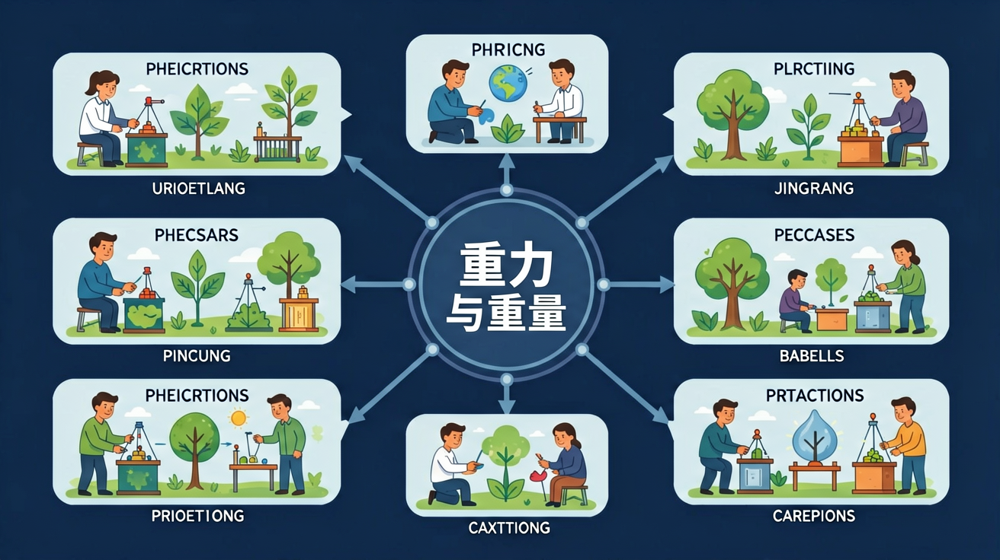

知道重力是地球对物体的引力，方向竖直向下
能说出质量（kg）和重量（N）的不同，理解为何月球上"变轻"
能计算同一物体在不同星球上的重量，感受重力差异
知道忽略空气阻力时，所有物体下落加速度相同（g≈10 m/s²）
1687 年，一个苹果从树上掉落，改变了科学史的走向。
我们生活在地球上，每天都看到东西往下掉：苹果落地、水向低处流、球飞出去后弧线下降……宇宙中所有有质量的物体都相互吸引，这是万有引力定律的奥秘。地球质量巨大，把周围所有物体都往自己"怀里"拉。
但是——月球上的宇航员为什么能跳那么高？在月球上，同一个人"变轻"了，是真的变瘦了吗？一根羽毛和一个铁球同时落下，谁先落地？重的一定落得更快吗？你的直觉是否正确？🤔
因此，我们需要区分质量和重量两个概念，搞清楚重力的本质。这不仅是科学，更关系到人造卫星如何绕地球转、潮汐为何涨落……让我们一起探索重力的秘密！
❓ 为什么苹果会往下掉，而不是往上飞？
❓ 我的体重在月球和地球上为什么不一样？
❓ 重力是不是就是地球的吸引力？
学完这一课，这些问题你都能自信地回答。
以下哪个物理量的单位是牛顿？
宇航员在太空站处于什么状态？
苹果为什么往下落？月球上你会变轻吗？探索无处不在的神奇力量——重力！
5 个场景：标题苹果落下 → 重力方向 → 质量vs重量 → 各星球对比 → 自由落体
重力是地球对物体的引力。方向：竖直向下（指向地心）。公式：G = m × g，其中 g ≈ 10 N/kg。
地球对物体的引力，使物体向地球中心加速运动
始终竖直向下，即指向地球中心（地心）
G = m × g
重力(N) = 质量(kg) × 9.8（约10）N/kg
苹果落地、水往低处流、潮汐涨落、人造卫星绕地球轨道
质量（kg）是物体本身物质的多少，在任何地方都不变；重量（N）是重力的大小，随星球重力不同而改变。
点击任意星球，查看你在那里的重量！（基于 50 kg 体重计算）
调节重力加速度（g），点击「发射」让物体下落，观察轨迹和落地时间的变化
伽利略通过实验证明：忽略空气阻力，所有物体的下落加速度都相同（g≈9.8m/s²）。质量不影响下落速度！
比萨斜塔实验：同时丢下 1 磅和 10 磅铁球，同时落地，推翻亚里士多德观点
v = g × t（速度）
s = ½ × g × t²（距离）
g ≈ 9.8 m/s²（近似 10）
阿波罗 15 号宇航员 Dave Scott 在月球真空环境中，同时丢下羽毛和锤子，完美同时落地！
现实中羽毛比铁球落得慢，是因为空气阻力大，不是因为质量小。
真空中羽毛=铁球！
卫星以极高速度水平飞行，"下落"的弧线正好和地球弯曲度吻合，永远绕轨道转！
月球的引力拉扯地球上的海水，产生潮汐。满月和新月时潮汐最大（大潮）
球被水平扔出后，水平速度不变，同时受重力向下加速，形成抛物线
用铅垂线找竖直方向、大坝利用水头重力发电、水塔靠重力自然供水
每题只有一个正确答案，选错了会告诉你为什么错
完成各项学习任务，解锁专属徽章！